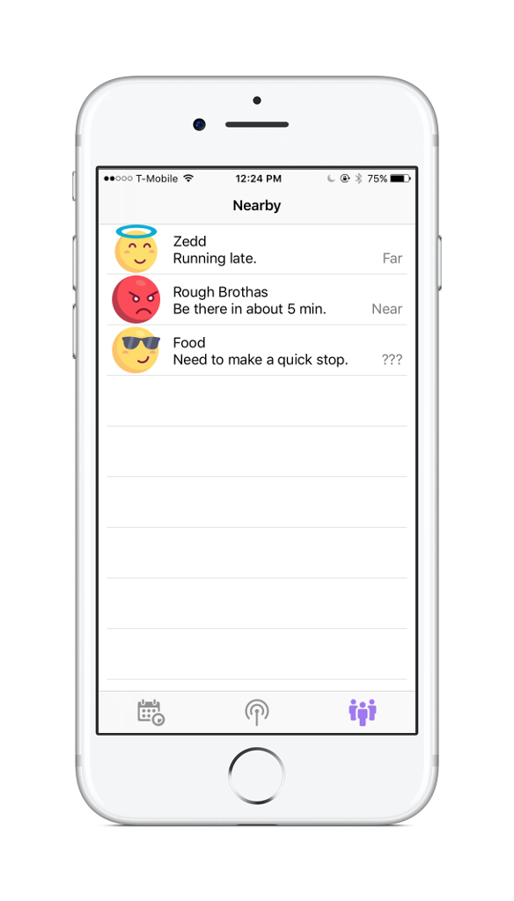

KREWDAR
No service? No problem. Meetup with friends at any crowded event, in just 3 easy steps!
Step one
Create an Event
Add the event name, start time, and duration. Only one person needs to create the Event, everyone else just needs to scan the KrewCode!

Step two
Start broadcasting
When it's time to find your friends, Krewdar will send you a notification to start broadcasting. Just push start to begin broadcasting your location.
Step three
Find your krew
Start looking for your krew! Krewdar will display info on nearby friends, including a short message and an approximate distance.

Ready?
Interested in joining the beta test?
Submit your email below!
FAQ